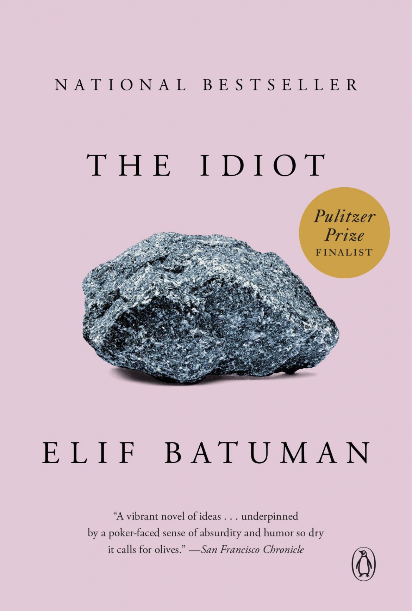

What If Growing Up Means Getting Lost?
เมื่อความสัมพันธ์เริ่มต้นจาก "อีเมล" —
เราจะรู้ได้อย่างไรว่านี่คือความสัมพันธ์?
การค้นหาตัวตน ภาษา ความรัก และความสับสนในมหาวิทยาลัยยุค 90s
ย้อนกลับไปปี 1995 ในรั้ว Harvard ยุคแรกเริ่มของอีเมล ร่วมติดตามสลิน (Selin) นักศึกษาปีหนึ่งที่ถลำลึกในความสัมพันธ์ทางตัวอักษรอันคลุมเครือกับไอแวน (Ivan) รุ่นพี่ชาวฮังการี เรื่องราวที่จะพาไปสำรวจความรักครั้งแรก ภาษา และความสับสนของการค้นหาตัวตนในวัยเยาว์
ทำไมจึงควรอ่านหนังสือเล่มนี้
ความสัมพันธ์ยุคแรกของอีเมล
ย้อนสู่ปี 1995 ยุคที่การส่งตัวอักษรหากันเต็มไปด้วยความเงียบ ระยะห่าง การเฝ้ารอ และการตั้งคำถามถึงความหมายของความสัมพันธ์ที่ยากจะนิยาม
เสน่ห์อารมณ์ขันแบบตลกร้าย
ก้าวผ่านความสับสนของการเป็นคนนอก วัฒนธรรมที่หลากหลาย และวัยเยาว์ที่ไร้ทิศทาง ผ่านน้ำเสียงตลกร้าย (Dry Humor) ที่ฉลาดและมีเอกลักษณ์
ประโยชน์ของหนังสือเล่มนี้
ความลึกซึ้งทางภาษา
ชวนตั้งคำถามว่าถ้อยคำที่เราใช้พูดหรือเขียน สามารถสื่อสารสิ่งที่อยู่ภายในใจได้ครบถ้วนจริงหรือไม่
เข้าใจความซับซ้อนของคน
สะท้อนช่องว่างระหว่างจินตนาการ ความผูกพัน และความเหงา ผ่านข้อความตัวอักษรของคนสองคน
ตกตะกอนเรื่องอัตลักษณ์
สะท้อนมุมมองชีวิตของสลินในฐานะลูกสาวผู้อพยพที่พยายามค้นหาที่ทางและตัวตนในรั้วมหาวิทยาลัย
โอบกอดการหลงทาง
มอบมุมมองว่าความสับสนและการหลงทางคือส่วนหนึ่งอันงดงามของการเติบโตไปสู่วัยผู้ใหญ่
คุณค่าและแก่นแท้แห่งวรรณกรรม
ภาษาและการสื่อสาร
สลินพยายามใช้ภาษาเพื่ออธิบายความจริงและความรู้สึกของเธอ แต่กลับพบว่าภาษามีข้อจำกัด และตัวอักษรบางครั้งก็สร้างโลกเสมือนขึ้นมา วรรณกรรมเล่มนี้จึงสะท้อนความพยายามของมนุษย์ในการเข้าใจกันผ่านถ้อยคำอย่างงดงาม
ความคลุมเครือของชีวิต
*The Idiot* มอบแก่นแท้ของการยอมรับความไม่เป็นระเบียบในวัยเยาว์ ความสัมพันธ์ที่ไร้บทสรุปชัดเจนสอนให้เรารู้ว่า การหลงทางและความคลุมเครือคือสะพานสำคัญที่จะพาเราไปสู่การรู้จักตนเองอย่างแท้จริง
"A vibrant novel of ideas . . . underpinned by a poker-faced sense of absurdity and humor so dry it calls for olives."